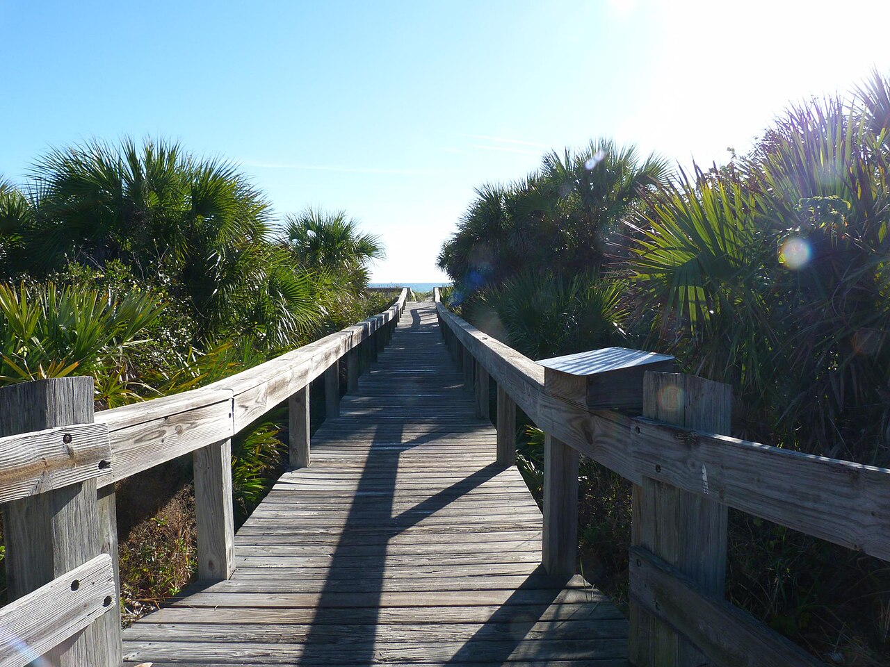
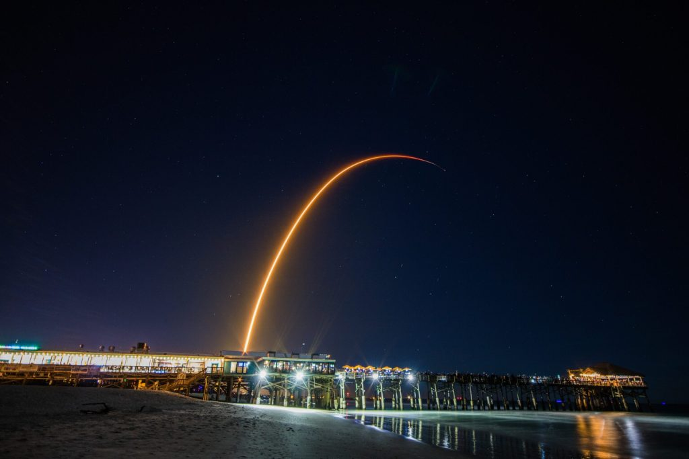
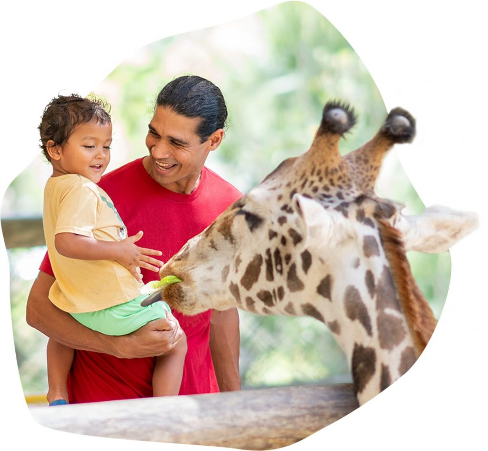

Cocoa Beach is a small beach city — about 11,000 residents, a single main road, and the Atlantic Ocean on one side and the Indian River Lagoon on the other. What makes it different from most Florida beach towns is what is directly to the north: Kennedy Space Center, the most active rocket launch site in the world. That combination — real surf culture, practical beach living, and front-row seats to space launches — is what most visitors are not expecting when they arrive.

Beaches
Beaches and swimming
Public beach access runs the length of N Atlantic Ave. The best-equipped spots are Sidney Fischer Park and Lori Wilson Park — both have parking, restrooms, and seasonal lifeguards. Lori Wilson is quieter and better for families. Sidney Fischer is closer to the commercial strip.
The beach is wide with tan sand and moderate wave action most days — 2–4 foot swells on average, enough for body surfing and boogie boarding without a lesson. Rip currents are real: watch the flag system at each access point. Red means no swimming; yellow means caution.
Jetty Park Beach at Port Canaveral, 6 miles north, is a strong family alternative — fishing pier, views of cruise ships and Navy vessels passing within a few hundred feet, and one of the best free rocket launch viewing spots on the coast.

Water Sports
Surf lessons, kayaking, and water sports
Cocoa Beach is the birthplace of East Coast surfing — Kelly Slater grew up here. Cocoa Beach Surf School runs beginner lessons for all ages, group sessions for families, and advanced instruction for guests who already know how to stand up. First-timers consistently get on a board.
On the Banana River side of the island, paddling the Thousand Islands Conservation Area through mangrove tunnels is a completely different experience — glassy flat water, manatees, roseate spoonbills, ospreys, and dolphins. Calm enough for kids, genuinely beautiful.
Fishing charters depart from Port Canaveral year-round — offshore bottom fishing, mahi and wahoo trolling, and inshore snook and redfish in the lagoon. Dolphin and wildlife boat tours loop through the port waterway for guests who want water time without the paddle commitment.

Space
Rocket launches and Kennedy Space Center
SpaceX launches from Cape Canaveral at a pace that would have been unimaginable a decade ago — sometimes multiple times per week. When a Falcon 9 goes up at night, you can watch from the beach, the balcony, or the Pier. The sky lights up, the ground shakes, then the sonic boom arrives 6–8 minutes later from the booster landing back at the Cape.
Kennedy Space Center Visitor Complex is 12 miles north — about a 20-minute drive. It's a full-day experience: Space Shuttle Atlantis, a Saturn V you can stand under, astronaut encounters, and bus tours to the launch pads. If a launch is scheduled during your stay, KSC sells premium viewing tickets that sell out in advance.
For guests staying at Sandcastles, oceanfront units face northwest with a direct sightline to LC-39A and SLC-40. No driving, no crowds.
See the next launch schedule →Landmarks
The Pier, Ron Jon, and the strip
The Cocoa Beach Pier extends 800 feet over the Atlantic at Meade Ave — bars, a restaurant, live music on weekends, and a launch-viewing perch. Ron Jon Surf Shop is open 24 hours, 365 days a year: 50,000 square feet of surf gear, beach apparel, and Cocoa Beach nostalgia. Even guests who buy nothing end up walking through. For a waterfront dinner, the Port Canaveral restaurants are 6 miles north with views of the working channel.
Landmarks
Cocoa Beach Pier
Bars, restaurants, live music, and one of the easiest Cocoa Beach landmarks to visit — and the best elevated launch-viewing spot in town.

Shopping
Ron Jon Surf Shop
Open 24 hours, 365 days. Even if you buy nothing, walking through is part of the Cocoa Beach experience.

Food & Drink
Port Canaveral · 6 miles north
Grills Seafood Deck & Tiki Bar
Outdoor waterfront dining with live music, fresh fish, and views of the port channel. The best dinner option at the port.
Day Trips
Day trips from Cocoa Beach
Orlando is 50 miles west — close enough for a theme park day without committing to a hotel. But the most rewarding day trips from Cocoa Beach are the ones that stay on the Space Coast.

Beaches
12 miles north
Canaveral National Seashore
24 miles of undeveloped Atlantic beach — no development, no crowds. One of the longest undeveloped barrier island beaches on the East Coast.

Nature & Wildlife
12 miles north
Merritt Island Wildlife Refuge
Alligators, manatees, roseate spoonbills, and bald eagles on the Black Point Wildlife Drive — beside the Kennedy Space Center launch pads.

Nature & Wildlife
Melbourne · 25 miles south
Brevard Zoo
Kayak-through animal habitats, giraffe feeding, and zip lining. A strong full-day family option when beach days need a change.
Food & Drink
Restaurants and dining
Cocoa Beach has a solid restaurant range for a town its size. Breakfast and brunch are particularly strong. For the full venue-by-venue directory with photos and links, see the Cocoa Beach Guide.

Breakfast & Lunch
Simply Delicious Cafe & Bakery
The longtime local favorite for generous portions, fresh bakery items, and an easy morning before the beach.

Bar & Restaurant
4th Street Fillin Station
A lively restaurant and bar with brunch, craft drinks, and a fun setting for a casual evening out.

Dinner
Florida's Fresh Grill
A polished dinner choice for fresh seafood and steaks — the right call for a date night or special-occasion meal.